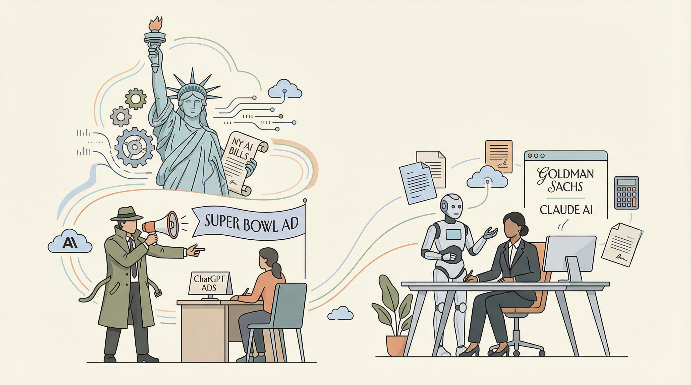

Anthropic发布 Claude Cowork，推动AI插件自主完成任务
两克伴AIGC日报
2026-02-09 星期一

本期关注：Anthropic升级Claude Cowork推动AI插件自主任务，开源零信任框架为AI代理提供信任基础设施，Busted工具实现AI流量监控与策略执行，CMU开源Agentic Search日志数据解析Agent行为模式，共同聚焦AI代理安全、信任与行为优化。
📰 行业动态
OpenClaw项目面临恶意软件威胁，转向Google VirusTotal寻求帮助
🔥 今日焦点
标题：开源零信任框架助力AI代理——12项服务全面测试
本文介绍了由yamigopal开发的开源零信任框架，该框架旨在为AI代理构建信任基础设施。该框架已开发约一年，包含12个微服务，涵盖了身份验证、行为监控、数据治理等多个方面。当CSA发布其代理信任框架规范时，开发团队发现其框架与规范中的五个要素完全对应，但规范中缺乏参考实现。因此，他们构建了一个具有创新功能的参考实现。
Show HN：Busted是一款基于eBPF（扩展伯克利包过滤）的监控工具，旨在实时监控和执行LLM（大型语言模型）/AI流量策略，无需对应用程序进行任何修改。该工具通过在OpenSSL的SSL_write/SSL_read函数上附加uprobes，捕获解密后的有效载荷，并对流量进行分类，识别包括OpenAI、Anthropic、Google等在内的12个以上LLM提供商。同时，Busted能够检测MCP JSON-RPC调用，并通过LSM（Linux安全模块）钩子在内核层面阻断连接。开发者可以编写内联Rego策略以实施监控和策略执行。例如，可以拒绝包含特定规格的Anthropic请求。这一工具的重要性在于，它为AI领域提供了一个强大的监控和策略执行手段，有助于确保AI代理发送的数据符合安全和政策要求，对于维护数据安全和合规性具有重要意义。
---
近日，卡内基梅隆大学（CMU）开源了首份Agentic Search日志数据，名为“先解行为，再训Agent”。这一举措旨在深入解析Agent的行为模式，为AI领域的研究提供新的视角和方法。
Agentic Search是一种新型的搜索算法，它将Agent视为搜索过程中的主体，通过模拟Agent的行为来优化搜索过程。CMU的研究团队通过收集和分析大量Agentic Search日志数据，揭示了Agent在搜索过程中的行为特征，为后续的Agent训练提供了重要参考。
📚 深度长文
CVPR 2026 Workshop征稿的《第六届AdvML@CV：多模态大模型智能体安全》一文，深入探讨了多模态大模型在智能体安全领域的应用与发展。文章核心观点在于强调随着多模态大模型技术的飞速发展，其安全性和可控性成为亟待解决的问题。作者通过分析多模态大模型在图像识别、自然语言处理等领域的应用，揭示了模型在处理复杂任务时可能存在的安全隐患。
关键论据包括：首先，多模态大模型在处理多源异构数据时，容易受到数据偏差和模型偏见的影响，导致决策失误；其次，模型在训练过程中可能泄露敏感信息，对个人隐私构成威胁；最后，大模型在部署过程中，其鲁棒性和抗干扰能力不足，容易受到恶意攻击。
英伟达世界模型再进化，引领机器人领域迈向全新里程碑。本文深入探讨了英伟达最新研发的模型，该模型有望实现一个模型驱动所有机器人的愿景。文章指出，这一突破性的进展标志着机器人的GPT时刻的到来。
核心观点在于，英伟达的新模型通过深度学习技术，能够使机器人具备跨领域的适应性和学习能力，从而实现从单一任务到多任务的高效转换。关键论据包括模型在复杂环境中的实时交互能力、对多种机器人硬件的兼容性以及对人类指令的精准理解。
📄 重点论文
**核心贡献**: 首次系统地研究了在4B参数规模上训练智能体模型，识别了阻碍边缘规模模型性能的三个主要瓶颈。
**与AI Agent的关联**: 为边缘规模智能体的长时深探索提供了新的思路，有助于提升边缘智能体的性能和实用性。
**核心贡献**: 系统地分析了不同策略更新机制和先进技术的组合，为智能体场景下的强化学习提供了收敛保证。
**与AI Agent的关联**: 为智能体强化学习提供了新的算法，有助于提高训练稳定性和收敛到最优策略的能力。
**核心贡献**: 引入了RuleSmith框架，通过利用多智能体LLM的推理能力实现自动游戏平衡。
**与AI Agent的关联**: 为游戏平衡问题提供了新的解决方案，展示了多智能体LLM在游戏平衡领域的应用潜力。
🛠️ 产品推荐
MadLab是一款专注于本地LLM微调的独立桌面应用程序。它具备GPU检测、PyTorch wheel选择和虚拟环境创建等自动化环境设置功能，让用户在几分钟内即可从零开始训练。MadLab内置了LoRA、QLoRA和DoRA的训练器逻辑，并探索了内置Chat As功能。该产品旨在解决LLM微调过程中的复杂性和时间消耗问题，为技术从业者提供高效、便捷的微调体验。
---
Show HN：一款基于AI的模拟面试助手，能够不断提出追问。该产品通过Codex技术构建，旨在帮助用户在面试前进行深度思考和问题解答训练，有效应对“深入解释”的压力。当用户意识到知识盲点时，可立即利用该工具进行学习。此外，用户可下载对话记录，方便后续复习和总结。该产品以AI技术为核心，为技术从业者提供高效面试准备解决方案。
---
NanoSLG是一款专为LLM（大型语言模型）设计的轻量级推理服务器，支持Llama-3.1-8B等模型。它具备Pipeline Parallelism（跨GPU分层并行）、Tensor Parallelism（权重分片）和混合模式等扩展功能，旨在实现多GPU服务器的性能优化。NanoSLG旨在为用户提供一个高效、易用的教育级工具，助力用户快速搭建高性能的LLM服务器，解决大规模模型推理中的性能瓶颈问题。